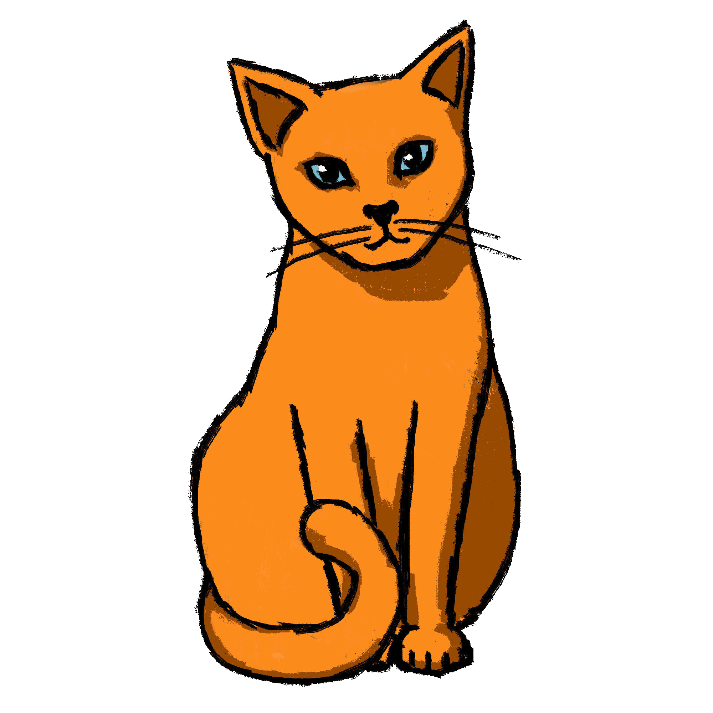
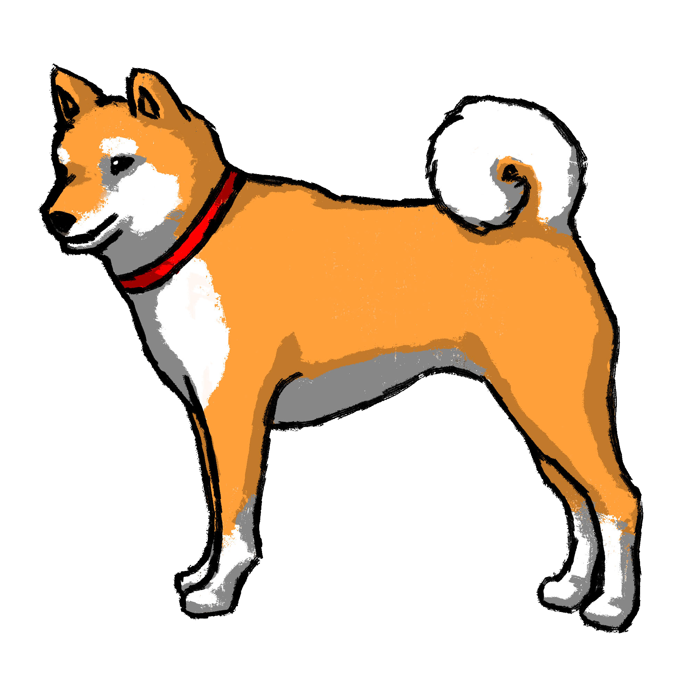

第二課
おー、あーい
単語１
文法１
練習１
単語２
文法２
練習２
単語復習
復習
文法を習いましょう！
おー、うれーびぎどぅんぷぃとぅゆ！
おー、うれーみーどぅんぷぃとぅゆ！

あーい、 うれー ぷぃとぅ あらぬ。
うれー まやーゆ！

あーい、 うれー ぷぃとぅ あらぬ。
うれー いんゆ！
練習しましょう！
うれー いんかやー？
あーい、うれー いん あらぬ。
うれー すぃぶぃらゆ！
うれー みーどぅんぷぃとぅかやー？
おー、うれー みーどぅんぷぃとぅゆ！
うれー ぐしかやー？
あーい、うれー ぐし あらぬ。
うれー ぷぃとぅゆ！
うれー すぃま ばそんなるぃかやー？
おー、うれー すぃまばそんなるぃゆ！


文法を習いましょう！
うぬ ぷぃとー なびーゆー。
うぬ ぷぃとー たるーゆー。

練習しましょう！
うぬ ぷぃとー たるかやー？
うぬ ぷぃとー たるーゆー。
うぬ ぷぃとー たるかやー？
うぬ ぷぃとー なびーゆー。
うぬ ぷぃとぅぬ なーや のーかやー？
うぬ ぷぃとぅぬ なーや なびーゆー。
うれー のーでぃどぅ あんずぃかやー？
うれー たるーでぃどぅ あんずぃゆー。
ばーや たるーでぃどぅ あんずぃゆー。
わーや のーでぃどぅ あんじょーるかやー？
ばーや 〇〇でぃどぅ あんずぃゆー。
どーでぃん みーし たぼーんなーら。
ばー なーや なびーゆー。
ばー なーや 〇〇ゆー
どーでぃん みーし たぼーんなーら。
| ぷぃとぅ
みーどぅん ぷぃとぅ びぎどぅん ぷぃとぅ すぃぶぃら ばー わー うれー（うぬぷぃとぅ） なー あんずぃ たる |
人
女 男 島ネギ 私 あなた 彼/彼女（その人） 名前 言う 誰 |